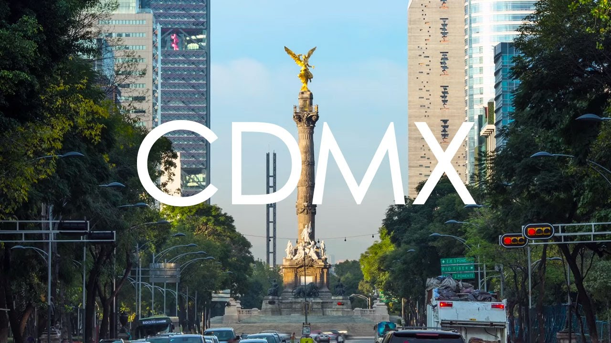
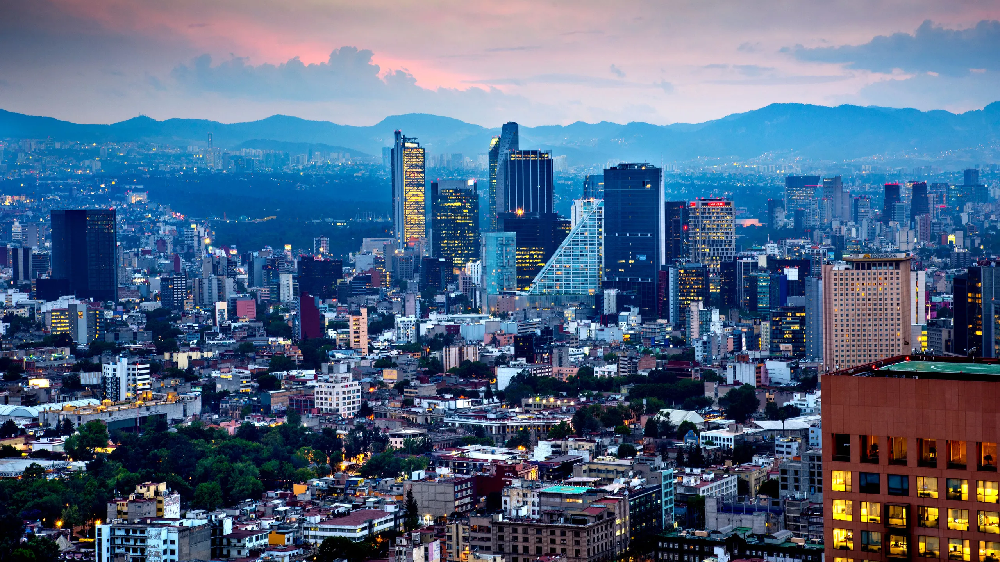

CDMX
Historia
La Ciudad de México fue fundada como asentamiento lacustre en un pequeño islote, el registro data de 1325, para el siglo XVI ya era un señorío Azteca. Durante la colonización española, los edificios del Virreinato fueron construidos sobre las ruinas aztecas.
Desde entonces los principales poderes del territorio y luego nación libre están asentados en el llamado Centro Histórico, fue en los años 30 del siglo XX que con diversos decretos se protegieron el Zócalo, Moneda y los edificios más importantes.
Con el descubrimiento del monolito azteca que representa a la Diosa Coyolxauhqui en 1978 se inició un Programa de Arqueología Urbana que localizó el Templo Mayor y otros vestigios, así el 11 de abril de 1980 es declarada Zona de Monumentos Históricos por decreto presidencial.
Tiene una superficie de 9.7 kilómetros cuadrados en donde existen 668 manzanas, tradicionalmente se divide en Perímetro A o zona central que consta de 2.7 km2 es la de mayor riqueza cultural al tener el 75% de sus inmuebles catalogados y sitios de renombre mundial como el Templo Mayor de México Tenochtitlan, la Catedral Metropolitana, el Palacio Nacional, el Antiguo Palacio del Ayuntamiento, el Palacio de Bellas Artes y el Museo Nacional de Arte, entre muchos otros.

La Ciudad de México desde el aire en 1928 Colección: Villasana-Torres
En la actualidad
La ciudad de México se administra políticamente como una entidad federativa autónoma dentro de los Estados Unidos Mexicanos. Desde 1997 dejó de ser un territorio federal y se convirtió en una entidad federativa más del país. Por esa razón ya no se nombra más a la ciudad como México DF, como se la conoció durante muchos años.
Al igual que el resto de los otros estados federativos, Ciudad de México organiza su administración política en tres poderes: el ejecutivo, el legislativo y el judicial. El jefe del poder ejecutivo de la ciudad de México es el Jefe de Gobierno, que es elegido democráticamente por los habitantes de la ciudad cada seis años.
Datos curiosos
- La Ciudad de México es una de las capitales más antiguas
- La capital mexicana es la ciudad capital más antigua de América, asegura el sitio web del gobierno local. Además, junto con Quito (la capital de Ecuador) es una de las únicas dos capitales fundadas por pueblos indígenas.
- La CDMX alberga una gran cantidad de museos
- Esta metrópoli es popularmente conocida como la “Capital Cultural de las Américas”, asegura el Gobierno de la Ciudad. Eso no es casualidad… Es que la Ciudad de México alberga más de 180 museos, de acuerdo con el Sistema de Información Cultural (SIC) de la Nación. Entre ellos, se encuentran el Museo Nacional de Antropología y el Museo Frida Kahlo.
- El bosque urbano más antiguo está en la Ciudad de México
- El bosque urbano más antiguo de América se encuentra en la CDMX y su historia se remonta a tres mil años atrás, asegura el Museo Nacional de Historia (MNH). Se trata del Bosque de Chapultepec, que también es considerado uno de los bosques urbanos más importantes del mundo y uno de los más grandes del hemisferio occidental, con unas 686 hectáreas.